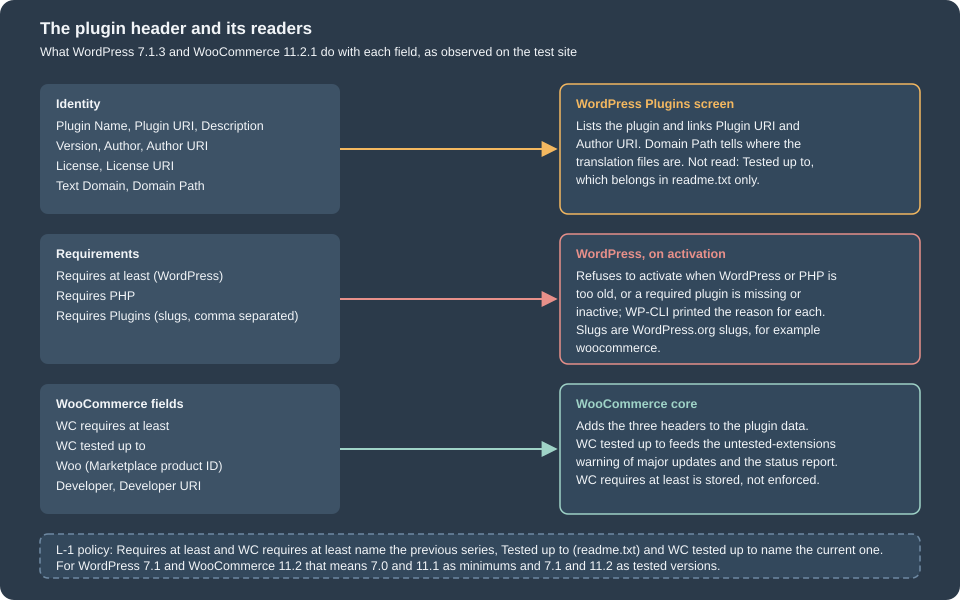
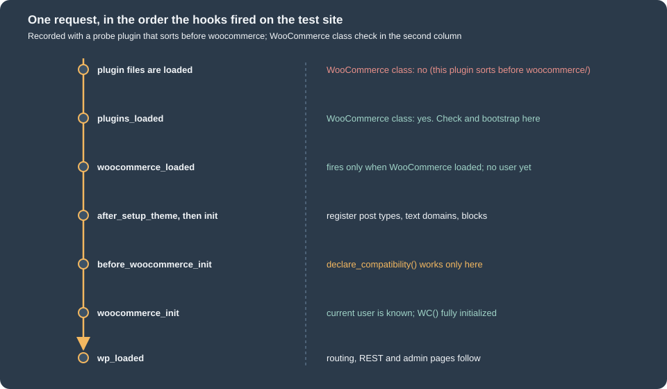

Extension Development
|
This content was generated with the assistance of AI and should be verified against the official documentation before being relied on in production. |
A WooCommerce extension is an ordinary WordPress plugin that depends on WooCommerce. There is no module registry, no package manifest and no compile step in the PHP part: WordPress reads a comment block at the top of the main file, loads the file on every request when the plugin is active, and the plugin attaches itself to the hooks of WordPress and WooCommerce. Everything that makes an extension good is therefore in the details around that: which header fields it declares, how it behaves when WooCommerce is missing or too old, which features of WooCommerce it declares to support, whether it cleans up after itself and whether it passes the coding standard that the Woo Marketplace checks. The plugin basics that WooCommerce does not change (headers, activation, uninstall) are covered in depth in Plugin Fundamentals.
This page was written against WordPress 7.1.3 and WooCommerce 11.2.1 (PHP 8.3.36, MariaDB 11.8.9) and checked on 2026-10-27.
It builds one small extension for the Pocket Coffee shop, pocket-coffee-extension, that shows the roast date of a coffee on
its product page (a badge, entered in the product editor) and writes a line to the WooCommerce log for every placed
order. The extension was installed in the local test shop, activated, exercised through WP-CLI and HTTP, checked with
PHP_CodeSniffer using the WooCommerce-Core and WordPress-Extra standards (no findings), translated into Spanish, deactivated and
uninstalled; every command output shown below was produced by it. Four things were not run: the create-woo-extension generator
(the template was read from its repository instead), the Woo Quality Insights Toolkit (QIT), a classic theme (the test
shop runs a block theme) and anything that needs a WordPress.org or Woo account.
The page is the entry point of the development half of the WooCommerce subsection. The hook system it relies on is in Hooks: Actions and Filters, the data classes in CRUD Objects and Data Stores, order storage in HPOS, background jobs in Action Scheduler, settings screens in Settings and Admin Pages, and the Marketplace submission process in Testing, Deployment and Marketplace. The PHP language features used here (namespaces, autoloading, Composer) are covered by Namespaces and autoloading and Composer and packages on this site.
What an extension is
An extension is a directory in wp-content/plugins/ (or a single PHP file there) whose main file starts with a header
comment. The directory name is the plugin slug, and by convention the main file has the same name plus .php:
pocket-coffee-extension/pocket-coffee-extension.php. WordPress identifies the plugin by that relative path, which is why
wp plugin activate pocket-coffee-extension and the active_plugins option use it.
A plugin passes through four states, and each has its own place for code:
| State | What triggers it | Where your code reacts |
|---|---|---|
Installed |
Files copied or uploaded; |
Nothing runs. The header is read for the Plugins screen. |
Active |
|
|
Inactive |
|
|
Uninstalled |
Delete in the Plugins screen, or |
|
Other places can hold WooCommerce code (the theme’s functions.php, a must-use plugin in wp-content/mu-plugins/, a code-snippets
plugin), but a theme’s code disappears when the theme changes, and must-use plugins have no activation, no
dependency check and no uninstall. Anything a merchant should be able to switch off, update or remove belongs in a
regular plugin. The official guidance adds that an extension should have a single core purpose, use WooCommerce features
as much as possible and not advertise inside the merchant’s admin; the checklist at the end collects the rules.
The layout of the example, with the purpose of each file:
pocket-coffee-extension/
├── pocket-coffee-extension.php header, constants, compatibility, WooCommerce check, bootstrap
├── uninstall.php removes the plugin's data when the plugin is deleted
├── includes/
│ └── class-plugin.php the Plugin class: all hooks of the extension
└── languages/
└── pocket-coffee-extension.pot generated with wp i18n make-potThe plugin header
The header is a PHP comment in the first 8 KB of the main file (WordPress reads exactly that much with
file_get_contents( $file, false, null, 0, 8 * KB_IN_BYTES )), one Field: value pair per line. Only Plugin Name is required. The example uses this one:
<?php
/**
* Plugin Name: Pocket Coffee Extension
* Plugin URI: https://example.com/pocket-coffee-extension
* Description: Shows the roast date of a coffee on its product page and logs every placed order.
* Version: 1.0.0
* Author: Pocket Coffee
* Author URI: https://example.com
* License: GPL-2.0-or-later
* License URI: https://www.gnu.org/licenses/gpl-2.0.html
* Text Domain: pocket-coffee-extension
* Domain Path: /languages
* Requires at least: 7.0
* Requires PHP: 7.4
* Requires Plugins: woocommerce
* WC requires at least: 11.1
* WC tested up to: 11.2
*
* @package PocketCoffeeExtension
*/
| Field | Read by | Meaning and pitfalls |
|---|---|---|
|
WordPress |
Required. The name in the Plugins screen and in WP-CLI listings. |
|
WordPress |
Home page of the plugin. Marketplace products point it at their woocommerce.com page. |
|
WordPress |
One sentence. It is the text translated by the plugin’s own text domain on the Plugins screen. |
|
WordPress |
The installed version. Keep it equal to the constant and to the version in |
|
WordPress |
The author and a link. The Woo conventions add |
|
WordPress |
WordPress.org requires a GPL-compatible license. The generator’s default is |
|
WordPress |
The i18n domain. It must equal the plugin directory name (no underscores): |
|
WordPress |
The folder, relative to the plugin, that holds the translation files; |
|
WordPress |
|
|
WordPress |
Where the plugin is updated from. Set it to your own host for a plugin that is not on WordPress.org, so that a plugin on WordPress.org with the same slug cannot overwrite it. |
|
WordPress |
Minimum WordPress version. Activation is refused below it. |
|
WordPress |
Minimum PHP version. Activation is refused below it. |
|
WordPress 6.5+ |
Comma-separated WordPress.org slugs of plugins that must be installed and active first ( |
|
WooCommerce |
Earliest WooCommerce version the plugin supports. WooCommerce 11.2.1 registers the header through the |
|
WooCommerce |
Latest WooCommerce version the plugin was tested with. A plugin that has this header is treated as WooCommerce-aware and appears in the compatibility lists and warnings; the untested-extension checks that compare it with a new version are switched off in 11.2.1 (see below). |
|
WooCommerce |
Product ID and key of an extension sold on woocommerce.com. Added automatically when the extension is submitted; WooCommerce picks the header up for the woocommerce.com helper. |
|
WordPress.org |
Not a header read by WordPress 7.1.3. The latest tested WordPress version belongs in |
get_plugin_data() shows which of these fields the installed software understands. On the test site:
$ wp eval '$d = get_plugin_data( WP_PLUGIN_DIR . "/pocket-coffee-extension/pocket-coffee-extension.php", false, false ); ...'
Name Pocket Coffee Extension
Version 1.0.0
RequiresWP 7.0
RequiresPHP 7.4
RequiresPlugins woocommerce
TextDomain pocket-coffee-extension
DomainPath /languages
WC requires at least 11.1
WC tested up to 11.2
WooThe three WooCommerce fields are keys of the array only because WooCommerce is active and added them in
wc_enable_wc_plugin_headers(); without WooCommerce, get_plugin_data() does not return them. The empty Woo value is
expected for an extension that is not sold on woocommerce.com.
What WordPress does with the requirement fields
Three header fields are enforced when someone activates the plugin. To see the behaviour, four throw-away plugins with an unmet
requirement each were activated with WP-CLI on the test site (they were deleted afterwards). A fifth one with
Requires Plugins: woocommerce activated normally.
$ wp plugin activate pcx-hdr-akismet # Requires Plugins: akismet (installed, inactive)
Warning: Failed to activate plugin. PCX Header Test akismet requires 1 plugin to be installed and activated: Akismet Anti-spam: Spam Protection. .
Error: No plugins activated.
$ wp plugin activate pcx-hdr-missing # Requires Plugins: no-such-plugin
Warning: Failed to activate plugin. PCX Header Test missing requires 1 plugin to be installed and activated: no-such-plugin. .
Error: No plugins activated.
$ wp plugin activate pcx-hdr-wp # Requires at least: 99.0
Warning: Failed to activate plugin. Current WordPress version (7.1.3) does not meet minimum requirements for PCX Header Test wp. The plugin requires WordPress 99.0.
Error: No plugins activated.
$ wp plugin activate pcx-hdr-php # Requires PHP: 9.9
Warning: Failed to activate plugin. Current PHP version (8.3.36) does not meet minimum requirements for PCX Header Test php. The plugin requires PHP 9.9..
Error: No plugins activated.In the admin the same checks disable the Activate link and show the reason in the plugin’s row. The dependency header, introduced in WordPress 6.5, has these rules (from the WordPress 6.5 developer note):
-
A dependent plugin cannot be installed or activated before its dependencies, and a dependency cannot be deactivated or deleted while a dependent is active or installed. A notice and a row error tell the administrator when a dependency later disappears (for example when the folder is deleted over FTP).
-
Only slugs from the WordPress.org directory are understood; a path such as
my-plugin/my-plugin.phpis not supported, and neither are commas in slugs. Circular dependencies are detected and block activation. -
There is no version constraint and no load-order guarantee. The WordPress note says that plugin authors should keep checking with
class_exists(),function_exists()or version checks where the plugin relies on specific functionality. -
WP-CLI is lenient about installing a dependent without its dependencies; the activation was refused in the run above.
The deactivate and delete rules were not run here: deactivating WooCommerce on the test site would have broken everything else installed on it.
The L-1 policy and what to put in the version fields
Woo supports the latest and the previous release series of WordPress and WooCommerce (latest minus one, L-1); only the
latest patch of each series counts, and beta or release-candidate versions do not move the window. WooCommerce core applies
it to WordPress; the extensions that Woo itself owns apply it to both WordPress and WooCommerce; a third-party author chooses
the range but should test every version claimed and publish accurate requirements. The headers are the place where that
promise is written down: Requires at least and WC requires at least name the previous series, and Tested up to (in
readme.txt) and WC tested up to name the current one.
| Field (value on 2026-10-27) | WordPress | WooCommerce | Rule |
|---|---|---|---|
Latest stable series |
7.1 (7.1.3) |
11.2 (11.2.1) |
|
Previous series |
7.0 |
11.1 |
|
WooCommerce core itself |
|
n/a |
Header of the 11.2.1 plugin |
The example declares Requires at least: 7.0, WC requires at least: 11.1 and WC tested up to: 11.2, which is exactly
the L-1 window. The WordPress minimum of WooCommerce itself rose to 7.0 in 11.1.0 (2026-09-03), so a lower
Requires at least would promise a WordPress version on which WooCommerce 11.1 and later no longer run. The Marketplace
asks for more than the policy: products must support the two latest major releases of WooCommerce and WordPress and PHP 7.4 as a
minimum (PHP 8.3 or later strongly recommended); see the submission page for the rest.
WC tested up to has two jobs in WooCommerce 11.2.1, and only one of them is active by default:
-
Marking the plugin as WooCommerce-aware.
PluginUtil::is_woocommerce_aware_plugin()is true for a plugin whose data has a non-emptyWC tested up to. When WooCommerce lists the plugins that are compatible, incompatible or uncertain about a feature (wp wc hpos compatibility-info, the Features screen), the uncertain ones are the aware plugins that have declared nothing; a plugin without the header that declares nothing is not listed at all, because WooCommerce assumes it has nothing to do with the shop. A plugin that callsdeclare_compatibility()is listed whether or not it has the header. On the test site, 7 active plugins carried the header andwp wc hpos compatibility-inforeported 0 uncertain plugins, because every one of them had declared compatibility. -
Warning about untested extensions on updates.
WC_Plugin_Updates::get_untested_plugins()compares the header with the version of an available update and feeds a warning on the Plugins and Updates screens, a line in the status report and a filter (auto_update_plugin) that stops WooCommerce from auto-updating while an active extension is untested. In 11.2.1 the constant that selects the comparison,WC_SSR_PLUGIN_UPDATE_RELEASE_VERSION_TYPE, is defined asnone(the source comment: versions have been backwards compatible since 5.0), and fornonethe function returns nothing. The three warnings are therefore inactive unless a site defines the constant asmajororminorinwp-config.phpbefore WooCommerce loads.
Keep the header current anyway: merchants, the Marketplace review and QIT read it, and a missing value is shown as unknown as soon as a site turns the
checks on. WC requires at least is not enforced by 11.2.1 at all, so an extension that needs a newer API must test for it in code
(next section).
Making sure WooCommerce is there
The Requires Plugins header keeps an administrator from activating the extension without WooCommerce, but it is not a
substitute for a runtime check: WP-CLI and file-system changes can still produce the state "extension active, WooCommerce
missing", the header has no version constraint, and WordPress does not guarantee the order in which active plugins are loaded.
A defensive extension has three layers, from the weakest to the strongest guarantee:
-
The header,
Requires Plugins: woocommerce, for the administrator’s benefit (above). -
A presence check at the right moment, with a notice instead of a fatal error when it fails.
-
A version check before the code uses an API that older releases lack, because
WC requires at leastis only metadata.
When WooCommerce’s code exists
PHP loads the active plugins one after the other, in the alphabetical order of their paths. An extension in
pocket-coffee-extension/ is included before woocommerce/, so at the moment its main file runs, the WooCommerce class and the
WC() function do not exist. A probe plugin that sorts before WooCommerce logged one front-end request on the test site
(the class check is class_exists( 'WooCommerce', false )):
plugin file loaded WooCommerce class: no
hook plugins_loaded WooCommerce class: yes
hook woocommerce_loaded WooCommerce class: yes
hook after_setup_theme WooCommerce class: yes
hook init WooCommerce class: yes
hook before_woocommerce_init WooCommerce class: yes
hook woocommerce_init WooCommerce class: yes
hook wp_loaded WooCommerce class: yesThe function check function_exists( 'WC' ) gave the same answer as the class check at every step.

The hooks have different jobs:
| Hook | Use it for |
|---|---|
|
The presence check and the bootstrap, as in the example. Every plugin file has been included, so |
|
An alternative that fires only when WooCommerce has loaded, so it is a presence check in itself. The developer documentation describes it as fired at about the same time as |
|
Declaring compatibility with features (see below). It fires during |
|
Code that needs |
The older recipes (in_array( 'woocommerce/woocommerce.php', apply_filters( 'active_plugins', get_option( 'active_plugins' ) ) )
and is_plugin_active()) are brittle: they fail when the plugin folder has another name, is_plugin_active() exists only in the admin
unless wp-admin/includes/plugin.php is included, and a network-activated plugin on multisite needs is_plugin_active_for_network(). Prefer
the hook or a class check.
The failure path
When the class check fails, the example does not load any other file; it attaches a notice and returns:
function pocket_coffee_extension_bootstrap() {
if ( ! class_exists( 'WooCommerce' ) ) {
add_action( 'admin_notices', 'pocket_coffee_extension_missing_wc_notice' );
return;
}
require_once __DIR__ . '/includes/class-plugin.php';
\PocketCoffee\Extension\Plugin::instance()->init();
}
add_action( 'plugins_loaded', 'pocket_coffee_extension_bootstrap' );To see the failure path without deactivating WooCommerce on the test store, WP-CLI was started with
--skip-plugins=woocommerce, which loads WordPress and the other plugins but not WooCommerce:
$ wp --skip-plugins=woocommerce eval 'echo class_exists("WooCommerce") ? "WC loaded" : "WC missing", "\n"; ...; do_action( "admin_notices" );'
WC missing
notice hooked
plugin class not loaded
<div class="notice notice-error"><p>Pocket Coffee Extension needs WooCommerce to be installed and active.</p></div>The extension stays inert, no WooCommerce function is called, and the administrator reads the reason. Everything that
touches WooCommerce lives in the class file that is required only after the check; the main file itself only calls
class_exists() and, inside a guarded closure, FeaturesUtil.
Checking the version
Because WC requires at least is not enforced by WooCommerce 11.2.1, an extension that depends on a newer API checks the
version itself, on a hook where WC() exists:
add_action(
'woocommerce_init',
static function () {
if ( version_compare( WC_VERSION, '11.1', '<' ) ) {
add_action( 'admin_notices', 'pocket_coffee_extension_old_wc_notice' );
return;
}
// Safe to use the APIs of WooCommerce 11.1 and later.
}
);WC_VERSION, wc()->version and WC()->version all returned 11.2.1 in a WP-CLI check. Feature detection
(function_exists(), method_exists(), class_exists()) is usually more robust than comparing version numbers, and it is the
only option for the pieces of WooCommerce that are marked internal (see the best practices below).
Scaffolding with create-woo-extension
@woocommerce/create-woo-extension is a template for @wordpress/create-block, the WordPress tool that generates
plugins and blocks. It generates a plugin with a React admin page that is registered in the WooCommerce admin
(wc-admin), PHP and JavaScript unit-test setup, linting and Prettier configuration, a wp-env configuration and a build based on
@wordpress/scripts with the WooCommerce dependency-extraction plugin. The generator needs Node.js with npm, Composer, and
Docker if the bundled wp-env environment is used; the Docker part is described in
Installation and Local Environments and
Docker getting started on this site.
npx @wordpress/create-block -t @woocommerce/create-woo-extension pocket-coffee-extension
cd pocket-coffee-extension
npm install # also runs the postinstall script: composer install
npm run build # or: npm run start, to watch
npm -g i @wordpress/env
wp-env start # a site at http://localhost:8888 with WooCommerce and the extension activeWhat was and was not run. The generator was not run for this page: running it executes a package
downloaded from the npm registry together with a build toolchain, which the environment where the page was written did not allow. Everything in this section
comes from the template sources in the WooCommerce repository (packages/js/create-woo-extension on the trunk branch,
read on 2026-10-27), the package metadata on the npm registry (version 2.1.0 published 2026-10-21) and the developer
documentation. The trunk sources may differ slightly from the published tarball, so treat the file lists below as
indicative and compare them with the output of your own run.
Variants. The template accepts --variant=<name>: add-report (a new report under Analytics), dashboard-section
(a section in the Analytics overview), sql-modification (a filter that changes the SQL of the Products report), table-column (extra
columns in the Products report) and add-task (a task in the onboarding task list). Without a variant the extension adds an example page
to the WooCommerce admin that shows components from @woocommerce/components.
Files generated by the default variant (the template folder lists these; create-block adds package.json, and npm install and npm run build add
node_modules/ and build/):
| File | Purpose |
|---|---|
|
Main file: header (author URI woocommerce.com, |
|
Registers the page with |
|
The React page, added with the |
|
PSR-4 autoload |
|
Replaces the default dependency-extraction plugin with |
|
|
|
Lint and format settings. |
|
A PHPUnit example and the translation template. |
Two points deserve a second look in the scaffold. First, its WooCommerce check is the older activation-hook-plus-plugins_loaded
pattern shown above and does not add Requires Plugins; add the header yourself. Second, the template header has no
WC requires at least or WC tested up to; add them (L-1 values above) and the compatibility declarations of the next section.
The tooling versions on 2026-10-27 were @woocommerce/create-woo-extension 2.1.0, @wordpress/env 12.0.0 and
@wordpress/scripts 37.0.0 (npm latest).
Other scaffolds: @woocommerce/extend-cart-checkout-block (a create-block template with several examples of extending the block checkout,
covered in Cart and Checkout Blocks), and the example extensions
inside the WooCommerce repository. The example in this page is a plain PHP plugin because it needs no JavaScript build.
The Pocket Coffee extension, file by file
The three files below are the complete extension. The main file does only what has to happen before WooCommerce is ready or when it is missing; the class holds the behaviour.
The main file
<?php
/**
* Plugin Name: Pocket Coffee Extension
* Plugin URI: https://example.com/pocket-coffee-extension
* Description: Shows the roast date of a coffee on its product page and logs every placed order.
* Version: 1.0.0
* Author: Pocket Coffee
* Author URI: https://example.com
* License: GPL-2.0-or-later
* License URI: https://www.gnu.org/licenses/gpl-2.0.html
* Text Domain: pocket-coffee-extension
* Domain Path: /languages
* Requires at least: 7.0
* Requires PHP: 7.4
* Requires Plugins: woocommerce
* WC requires at least: 11.1
* WC tested up to: 11.2
*
* @package PocketCoffeeExtension
*/
defined( 'ABSPATH' ) || exit;
define( 'POCKET_COFFEE_EXTENSION_FILE', __FILE__ );
define( 'POCKET_COFFEE_EXTENSION_VERSION', '1.0.0' );
/**
* Declares the features this plugin has been tested with. Must run on before_woocommerce_init.
*/
add_action(
'before_woocommerce_init',
static function () {
if ( class_exists( \Automattic\WooCommerce\Utilities\FeaturesUtil::class ) ) {
\Automattic\WooCommerce\Utilities\FeaturesUtil::declare_compatibility( 'custom_order_tables', POCKET_COFFEE_EXTENSION_FILE, true );
\Automattic\WooCommerce\Utilities\FeaturesUtil::declare_compatibility( 'cart_checkout_blocks', POCKET_COFFEE_EXTENSION_FILE, true );
}
}
);
/**
* Tells the administrator why the plugin does nothing when WooCommerce is missing.
*/
function pocket_coffee_extension_missing_wc_notice() {
echo '<div class="notice notice-error"><p>';
echo esc_html__( 'Pocket Coffee Extension needs WooCommerce to be installed and active.', 'pocket-coffee-extension' );
echo '</p></div>';
}
/**
* Starts the plugin once every plugin file has been loaded, so WooCommerce is known to be there or not.
*/
function pocket_coffee_extension_bootstrap() {
if ( ! class_exists( 'WooCommerce' ) ) {
add_action( 'admin_notices', 'pocket_coffee_extension_missing_wc_notice' );
return;
}
require_once __DIR__ . '/includes/class-plugin.php';
\PocketCoffee\Extension\Plugin::instance()->init();
}
add_action( 'plugins_loaded', 'pocket_coffee_extension_bootstrap' );
register_activation_hook(
__FILE__,
static function () {
// Remember which version created the data, so a later release can migrate it.
add_option( 'pocket_coffee_extension_version', POCKET_COFFEE_EXTENSION_VERSION );
}
);-
The constants give the class and
uninstall.phpone source for the file path (needed bydeclare_compatibility()andplugin_basename()) and the version (needed by the upgrade routine). -
before_woocommerce_initis the only hook on whichFeaturesUtil::declare_compatibility()works. The call is wrapped in aclass_exists()check so that the file can also be loaded when WooCommerce is absent. -
plugins_loadedruns the bootstrap function; the missing-WooCommerce notice is a plain function so that it can be hooked before the class file has been included. All strings go throughesc_html__()with the plugin’s text domain. -
register_activation_hook()stores the version withadd_option()(which does nothing when the option already exists). The hook runs only on activation, not on update and not on every request.
The Plugin class
<?php
/**
* Main class of the Pocket Coffee extension.
*
* @package PocketCoffeeExtension
*/
namespace PocketCoffee\Extension;
defined( 'ABSPATH' ) || exit;
/**
* Wires the hooks of the roast date badge and of the order log.
*/
final class Plugin {
const ROAST_DATE_META = '_pocket_coffee_extension_roast_date';
const LOGGED_META = '_pocket_coffee_extension_logged';
/**
* The only instance.
*
* @var Plugin|null
*/
private static $instance = null;
/**
* IDs of the orders placed during this request, logged on shutdown.
*
* @var int[]
*/
private $placed = array();
/**
* Gets the instance.
*
* @return Plugin
*/
public static function instance(): Plugin {
if ( null === self::$instance ) {
self::$instance = new self();
}
return self::$instance;
}
/**
* Registers every hook. Called once, on plugins_loaded.
*/
public function init(): void {
add_action( 'init', array( $this, 'load_textdomain' ) );
add_action( 'init', array( $this, 'maybe_upgrade' ) );
// Admin: a date field in the General tab of the product data box, saved through the product object.
add_action( 'woocommerce_product_options_general_product_data', array( $this, 'render_roast_date_field' ) );
add_action( 'woocommerce_admin_process_product_object', array( $this, 'save_roast_date' ) );
// Storefront: the classic summary hook also runs in block themes, through WooCommerce's template compatibility layer.
add_action( 'woocommerce_single_product_summary', array( $this, 'print_badge' ), 11 );
// Orders: runs after every save of an order, so it sees the items and the total.
add_action( 'woocommerce_after_order_object_save', array( $this, 'log_placed_order' ) );
}
/**
* Loads the translations of the plugin.
*/
public function load_textdomain(): void {
load_plugin_textdomain( 'pocket-coffee-extension', false, dirname( plugin_basename( POCKET_COFFEE_EXTENSION_FILE ) ) . '/languages' );
}
/**
* Runs the data migrations of a newer release once, when the stored version is older than the code.
*/
public function maybe_upgrade(): void {
$stored = get_option( 'pocket_coffee_extension_version', '0' );
if ( version_compare( $stored, POCKET_COFFEE_EXTENSION_VERSION, '<' ) ) {
// Migrations of future releases go here, guarded by version_compare( $stored, 'x.y.z', '<' ).
update_option( 'pocket_coffee_extension_version', POCKET_COFFEE_EXTENSION_VERSION );
}
}
/**
* Prints the field in the product editor.
*/
public function render_roast_date_field(): void {
woocommerce_wp_text_input(
array(
'id' => self::ROAST_DATE_META,
'label' => __( 'Roast date', 'pocket-coffee-extension' ),
'type' => 'date',
'desc_tip' => true,
'description' => __( 'Shown as a badge on the product page.', 'pocket-coffee-extension' ),
)
);
}
/**
* Saves the field. WooCommerce has verified the nonce and the capability before this runs.
*
* @param \WC_Product $product The product being saved; WooCommerce calls save() after this action.
*/
public function save_roast_date( $product ): void {
// phpcs:ignore WordPress.Security.NonceVerification.Missing -- verified by WooCommerce before woocommerce_admin_process_product_object.
$value = isset( $_POST[ self::ROAST_DATE_META ] ) ? sanitize_text_field( wp_unslash( $_POST[ self::ROAST_DATE_META ] ) ) : '';
if ( '' !== $value && ! preg_match( '/^\d{4}-\d{2}-\d{2}$/', $value ) ) {
$value = '';
}
$product->update_meta_data( self::ROAST_DATE_META, $value );
}
/**
* Builds the badge HTML for a product.
*
* @param int $product_id Product ID.
* @return string Empty when the product has no roast date.
*/
private function badge_html( int $product_id ): string {
$product = wc_get_product( $product_id );
$date = $product ? (string) $product->get_meta( self::ROAST_DATE_META ) : '';
if ( '' === $date ) {
return '';
}
return sprintf(
'<p class="pocket-coffee-roast-badge">%s</p>',
/* translators: %s: roast date. */
esc_html( sprintf( __( 'Roasted on %s', 'pocket-coffee-extension' ), wc_format_datetime( wc_string_to_datetime( $date ) ) ) )
);
}
/**
* Prints the badge in the product summary.
*/
public function print_badge(): void {
echo wp_kses_post( $this->badge_html( (int) get_the_ID() ) );
}
/**
* Notes that an order has been placed; the log line is written at the end of the request.
*
* Not woocommerce_new_order: that hook fires when the order row is created, before the REST API and the
* admin have added the line items, and even after a later save the total may not be calculated yet. A draft
* is not a placed order either. Reading the order again on shutdown gives its final state.
*
* @param mixed $order The order that has just been saved.
*/
public function log_placed_order( $order ): void {
if ( ! $order instanceof \WC_Order || in_array( $order->get_status(), array( 'checkout-draft', 'auto-draft' ), true ) ) {
return;
}
if ( ! $order->get_items() || 'yes' === $order->get_meta( self::LOGGED_META ) ) {
return;
}
$order->update_meta_data( self::LOGGED_META, 'yes' );
$order->save_meta_data();
if ( ! $this->placed ) {
add_action( 'shutdown', array( $this, 'write_log' ) );
}
$this->placed[] = $order->get_id();
}
/**
* Writes "Order placed" to the WooCommerce log for the orders noted during this request.
*/
public function write_log(): void {
foreach ( $this->placed as $order_id ) {
$order = wc_get_order( $order_id );
if ( $order ) {
wc_get_logger()->info(
sprintf( 'Order placed: #%s total %s', $order->get_order_number(), $order->get_total() ),
array( 'source' => 'pocket-coffee-extension' )
);
}
}
$this->placed = array();
}
}The points that matter:
-
No work at include time. The class only registers hooks in
init(). Nothing is queried and no output is produced before WordPress and WooCommerce are ready. -
The admin field.
woocommerce_product_options_general_product_dataprints inside the General tab of the product data box.woocommerce_wp_text_input()is an admin-only helper (it lives inincludes/admin/wc-meta-box-functions.php), which is fine because the hook fires only there; calling it on the storefront or from WP-CLI fails with an undefined function unless the file is included, as the test script below does. The rendered field was:<p class="form-field _pocket_coffee_extension_roast_date_field "> <label for="_pocket_coffee_extension_roast_date">Roast date</label><span class="woocommerce-help-tip" tabindex="0" aria-label="Shown as a badge on the product page." data-tip="Shown as a badge on the product page."></span><input type="date" class="short" style="" name="_pocket_coffee_extension_roast_date" id="_pocket_coffee_extension_roast_date" value="2026-10-26" placeholder="" /> </p> -
Saving through the product object.
woocommerce_admin_process_product_objectreceives theWC_Productthat WooCommerce is about to save, after it has verified the nonce and the capability, and the plugin only callsupdate_meta_data(). WooCommerce callssave()afterwards, so the data goes through the data store (see CRUD objects). The olderwoocommerce_process_product_metaaction receives an ID and invitesupdate_post_meta(). Input is validated: a value that is notYYYY-MM-DDis stored as an empty string; the test with26/10/2026stored"". -
The meta key. It starts with an underscore (hidden from the Custom Fields box) and with the full plugin prefix. A first version of the example used
_pocket_coffee_roast_date; another plugin installed on the same shop used the same key for its own data, and deleting that key at uninstall removed the other plugin’s rows too (the rows were put back). Prefix every option, meta key, transient, hook name and CSS class with something that is unique to the plugin. -
The storefront badge.
woocommerce_single_product_summaryis a classic-theme hook, and the badge still appeared exactly once in the block theme of the test shop. WooCommerce has a compatibility layer for block themes (SingleProductTemplateCompatibility) that runs the classic single-product hooks that have callbacks attached, injecting them before the Product Summary or post-excerpt block. The badge printed on the test site was:<p class="pocket-coffee-roast-badge">Roasted on October 26, 2026</p>The position in a block theme is therefore decided by that layer, not by the numeric priority. A theme that wants the badge elsewhere should use a block (see Themes: Block and Classic). The same hook in a classic theme such as Storefront was not run here.
-
The date output goes through
wc_string_to_datetime()andwc_format_datetime()(site format and time zone) andesc_html(); the finalwp_kses_post()on the print is belt and braces for the<p>wrapper. -
Logging placed orders. The first idea,
woocommerce_new_order, is the wrong hook for "an order was placed with total X": it fires when the order row is created, before the REST API, the admin or WP-CLI add the line items, and a CLI-created order was logged with total 0. The block checkout fires it once with statuspendingon the test site, and WooCommerce also has drafts with statuscheckout-draftthat are not placed orders.woocommerce_after_order_object_savefires after every save of an order (with HPOS or without), so the plugin waits for an order that is not a draft, has items and has not been logged, records its ID and flags it with order meta (update_meta_data()andsave_meta_data(); the flag is set before the meta is saved, so a nested save cannot log twice), and writes the line onshutdownfrom a freshwc_get_order()so that the total is final. Results on the test site:2026-10-27T18:57:16+00:00 INFO Order placed: #349 total 17.80 (two lines of 8.90, created with wp wc shop_order create) 2026-10-27T18:57:26+00:00 INFO Order placed: #352 total 8.90 (a checkout-draft order set to on-hold: no line while it was a draft)The channel-specific hooks are an alternative when only one channel matters:
woocommerce_checkout_order_processedandwoocommerce_checkout_order_createdfor the classic checkout,woocommerce_store_api_checkout_order_processedfor the block checkout. The probe showed this order for a Store API checkout:woocommerce_new_order(status pending),woocommerce_order_status_changed(pending),woocommerce_store_api_checkout_order_processed, thenwoocommerce_order_status_changed(on-hold). The log goes throughwc_get_logger()with asource, which is the supported way to write logs; they appear under WooCommerce > Status > Logs. -
Singleton and
final. One instance, created onplugins_loaded; the class isfinaland not meant to be extended. Use dependency injection or a service container for a large extension; the plugin structure scales toincludes/subfolders with a PSR-4 autoloader from Composer (see Namespaces and autoloading).
uninstall.php
<?php
/**
* Removes the data of the plugin when it is deleted from the Plugins screen.
*
* @package PocketCoffeeExtension
*/
defined( 'WP_UNINSTALL_PLUGIN' ) || exit;
delete_option( 'pocket_coffee_extension_version' );
// The roast date is product meta; products and variations are posts, so the post meta API is correct here.
// Order meta (_pocket_coffee_extension_logged) is kept: orders are the merchant's records and may live in custom tables.
delete_post_meta_by_key( '_pocket_coffee_extension_roast_date' );The file is described in the uninstall section below.
Compatibility declarations
WooCommerce lets a plugin say that it has been tested with a feature, or that it knows it does not work with it. The feature
registry in 11.2.1 contains these IDs (FeaturesUtil::get_features()): analytics, cart_checkout_blocks, rate_limit_checkout,
marketplace, order_withdrawal, order_attribution, site_visibility_badge, hpos_datastore_caching, remote_logging,
deferred_transactional_emails, customer_review_request, email_improvements, blueprint, variation_gallery,
point_of_sale, fulfillments, push_notifications, custom_order_tables and cost_of_goods_sold, plus experimental ones such as mcp_integration
and rest_api_caching (listed with get_features( true )). Two matter for nearly every extension:
| Feature ID | What declaring it promises |
|---|---|
|
The plugin works when orders live in the HPOS tables: it reads and writes orders through |
|
The plugin works with the Cart and Checkout blocks, which ignore the classic checkout hooks. See Cart and Checkout Blocks. |
The declaration is code in the main file:
add_action(
'before_woocommerce_init',
static function () {
if ( class_exists( \Automattic\WooCommerce\Utilities\FeaturesUtil::class ) ) {
\Automattic\WooCommerce\Utilities\FeaturesUtil::declare_compatibility( 'custom_order_tables', POCKET_COFFEE_EXTENSION_FILE, true );
\Automattic\WooCommerce\Utilities\FeaturesUtil::declare_compatibility( 'cart_checkout_blocks', POCKET_COFFEE_EXTENSION_FILE, true );
}
}
);Rules, from the source of FeaturesUtil and the tests on the test site:
-
declare_compatibility( string $feature_id, string $plugin_file, bool $positive_compatibility = true ): boolmust run inside abefore_woocommerce_inithandler; it returnsfalsewhen called anywhere else or for a feature that does not exist. Called from WP-CLI after WooCommerce had initialized,declare_compatibility( 'custom_order_tables', ..., true )returnedbool(false). Pass__FILE__of the main file (the example passes the constant that holds it). -
The third argument
falsedeclares incompatibility. A plugin that declares both compatible and incompatible for the same feature raises an exception. -
The result can be read back:
FeaturesUtil::get_compatible_features_for_plugin( 'pocket-coffee-extension/pocket-coffee-extension.php' )(afterwoocommerce_init) returnedcompatible: [cart_checkout_blocks, custom_order_tables],incompatible: []and the other features asuncertain.get_compatible_plugins_for_feature()is the reverse query. -
wp wc hpos compatibility-infosummarises the plugins for the HPOS feature. With the example active:$ wp wc hpos compatibility-info ... Pocket Coffee Extension ... 0 incompatible plugins found 0 uncertain plugins foundand with a throw-away plugin whose only code was
declare_compatibility( 'custom_order_tables', __FILE__, false ):1 incompatible plugin found: PCX Incompatible Test 0 uncertain plugins found(that plugin was deleted afterwards). In the admin, WooCommerce warns when someone enables HPOS while an incompatible plugin is active and adds a filter to the Plugins screen,
plugins.php?plugin_status=incompatible_with_feature&feature_id=custom_order_tables. Both use the declarations only for plugins that carryWC tested up to, as described in the header section. -
A declaration is a promise, made after testing. Declaring compatibility with HPOS because the warning is annoying leads to lost or split order data. The official self-declaration process is: test with the latest WordPress and WooCommerce and with the component (blocks checkout, HPOS, the Site Editor), declare in the plugin and in its documentation, and tell users the compatible versions in the changelog or on the product page. Manual testing means a real shop setup, the core components, other common plugins active at the same time and several themes.
-
The block product editor that older guides list among the components was deprecated in 10.9.0 and removed in 11.0.0; the classic editor (the one with
woocommerce_product_options_general_product_data) is the only product editor of 11.2.1, so no declaration is needed for it.
Activation, upgrades and stored data
Activation hook. register_activation_hook( __FILE__, $callback ) runs once, in the request that activates the plugin, after
the plugin file has been included. Use it for one-time setup: default options, a first scheduled action, creating a table
with dbDelta() if there is really no alternative. It does not run when the plugin is updated, when WP-CLI or an auto-update replaces the files, or on a
multisite network activation for every site, so it is the wrong place for data migrations and the wrong place to check for
WooCommerce (the activation request has WooCommerce loaded only if it sorts earlier). The example stores its version with
add_option() and nothing else.
Upgrades. Plugins are updated by replacing files, so the code must discover that data written by an older release needs
changing. The example keeps the installed version in the option pocket_coffee_extension_version and compares it with the
constant on init:
public function maybe_upgrade(): void {
$stored = get_option( 'pocket_coffee_extension_version', '0' );
if ( version_compare( $stored, POCKET_COFFEE_EXTENSION_VERSION, '<' ) ) {
// Migrations of future releases go here, guarded by version_compare( $stored, 'x.y.z', '<' ).
update_option( 'pocket_coffee_extension_version', POCKET_COFFEE_EXTENSION_VERSION );
}
}Keep each migration idempotent. A migration that touches thousands of rows must not run in one request: queue it as a
background job (see Action Scheduler). WooCommerce itself uses the same pattern with
its woocommerce_db_version option and queued update callbacks.
Where to store what. The WooCommerce data-storage primer gives the rule of thumb: expiring data in a transient; persistent data that
may be absent in the object cache (wp_cache_*); persistent, always-needed settings in an option; an entity with many units in a post type;
a way of grouping entities in a taxonomy; debugging output in a log written with WC_Logger. Avoid custom database tables when one of these fits;
the Marketplace guidelines say so explicitly. Products, orders, customers and coupons are read and written through their
CRUD classes ($product->get_meta(), $order->update_meta_data() and save()), which respect the data store in use, including HPOS, caches
and the hooks other plugins listen to.
Security of what is stored and printed. Validate and sanitize input when it arrives (sanitize_text_field( wp_unslash( ... ) ) and the
regular expression in save_roast_date()), escape when it leaves (esc_html(), esc_attr(), esc_url(), wp_kses_post()), use nonces for
requests the plugin handles itself and capability checks for anything that changes data. The product editor’s own nonce and capability check cover the save
action used in the example; a custom AJAX handler or REST route would need its own. The WordPress security documentation is the reference.
Source: WordPress APIs: Security
Translations
The text domain is the plugin slug, pocket-coffee-extension; the header’s Domain Path: /languages tells WordPress where
the files are. Every user-facing string goes through __(), esc_html__() or the other i18n functions with a literal string and the domain
(the tools that extract strings read the source, they do not run it), placeholders are numbered or commented with a
/* translators: */ comment, and the strings are written in English, the WordPress default; extra languages ship as translation files or come from
translate.wordpress.org for plugins hosted on WordPress.org. The example loads its files on init with load_plugin_textdomain(). WordPress 6.7 and later can report a translation
requested before init with a notice (_load_textdomain_just_in_time was called incorrectly), so keep calls to the translation functions out of the main file’s top level and out of
class constants.
WP-CLI generated the template, and a Spanish file made the strings translatable. The Pocket Coffee shop’s default language is Spanish, and the extension’s three strings were translated:
$ wp i18n make-pot wp-content/plugins/pocket-coffee-extension wp-content/plugins/pocket-coffee-extension/languages/pocket-coffee-extension.pot --domain=pocket-coffee-extension
Plugin file detected.
Success: POT file successfully generated.
$ wp i18n make-mo wp-content/plugins/pocket-coffee-extension/languages
Success: Created 1 file.
$ wp eval 'switch_to_locale( "es_ES" ); echo __( "Roast date", "pocket-coffee-extension" ), " | ", sprintf( __( "Roasted on %s", "pocket-coffee-extension" ), "26 octubre 2026" ), "\n"; restore_previous_locale(); echo __( "Roast date", "pocket-coffee-extension" ), "\n";'
Fecha de tostado | Tostado el 26 octubre 2026
Roast dateThe .po file was pocket-coffee-extension-es_ES.po with three msgid/msgstr pairs. The .pot also lists the plugin header fields (name, description, author)
as translatable strings. See Taxes, Coupons, Currencies and i18n for store-level multilingual setup.
Deactivation and uninstall
Three different operations are easy to confuse:
| Operation | What WordPress does | What the extension should do |
|---|---|---|
Deactivate |
Removes the plugin from |
Stop what it started: clear its own WP-Cron events ( |
Uninstall (Delete) |
Runs |
Remove the data that only the plugin understands: its options, transients, scheduled actions, custom tables, and meta keys it created. |
Update |
Replaces the files. Neither hook runs. |
Detect the new version on the next request and migrate (above). |
uninstall.php is preferred over register_uninstall_hook() because the file is not loaded on normal requests and WordPress
defines WP_UNINSTALL_PLUGIN before running it; the guard defined( 'WP_UNINSTALL_PLUGIN' ) || exit; stops anyone from requesting the
file directly. WordPress does not load the plugin’s own code during the uninstall, so the file may not call its classes or constants.
What the example’s uninstall.php removes, and what it keeps:
<?php
defined( 'WP_UNINSTALL_PLUGIN' ) || exit;
delete_option( 'pocket_coffee_extension_version' );
// The roast date is product meta; products and variations are posts, so the post meta API is correct here.
// Order meta (_pocket_coffee_extension_logged) is kept: orders are the merchant's records and may live in custom tables.
delete_post_meta_by_key( '_pocket_coffee_extension_roast_date' );Test run on the shop, with a product that had a roast date and an order that the plugin had logged (order 405):
$ wp option get pocket_coffee_extension_version
1.0.0
$ wp db query "SELECT COUNT(*) AS roast_rows FROM wp_postmeta WHERE meta_key='_pocket_coffee_extension_roast_date'"
roast_rows
1
$ wp plugin deactivate pocket-coffee-extension
Success: Deactivated 1 of 1 plugins.
$ wp option get pocket_coffee_extension_version # deactivation keeps the data
1.0.0
$ wp plugin uninstall pocket-coffee-extension
Success: Uninstalled 1 of 1 plugins.
$ wp option get pocket_coffee_extension_version
Error: Could not get 'pocket_coffee_extension_version' option. Does it exist?
$ wp db query "SELECT COUNT(*) AS roast_rows FROM wp_postmeta WHERE meta_key='_pocket_coffee_extension_roast_date'"
roast_rows
0
$ wp db query "SELECT order_id,meta_key,meta_value FROM wp_wc_orders_meta WHERE order_id=405 AND meta_key LIKE '%logged'"
order_id meta_key meta_value
405 _pocket_coffee_extension_logged yesDesign decisions in the file:
-
Order data is kept. The order flag lives in the HPOS table
wp_wc_orders_meta; deleting it withdelete_post_meta_by_key()would not even reach it (that function only knowswp_postmeta), and removing data from orders is something a merchant has to decide, not an uninstall script. If an extension must remove order meta, it iterates withwc_get_orders()and callsdelete_meta_data()andsave(). -
The key is unique.
delete_post_meta_by_key()removes the key from every post, so a short generic key would take other plugins' data with it. The example uses the plugin slug in the key for this reason. -
Network. On a multisite network each site has its own options and tables; an uninstall that must clean every site loops over
get_sites()withswitch_to_blog(). -
Scheduled work. A plugin that scheduled Action Scheduler actions cancels them by group in
uninstall.php; the pitfall with arguments that makeas_unschedule_all_actions( 'hook', array(), 'group' )miss rows is explained on the Action Scheduler page. -
Ask first. A plugin that stores a lot of merchant-created content (forms, rules, reports) usually offers a setting such as "delete all data on uninstall", off by default, and
uninstall.phpreads it withget_option()before deleting.
Testing and checking an extension
Coding standard. PHP_CodeSniffer with the Woo and WordPress rule sets is the baseline. The standards on the test site came from
woocommerce/woocommerce-sniffs 2.0.0, wp-coding-standards/wpcs 3.4.1 and phpcompatibility/phpcompatibility-wp 2.1.8 on
PHP_CodeSniffer 3.13.6. The extension passed both checks:
$ phpcs --standard=WooCommerce-Core --extensions=php --runtime-set testVersion 7.4- pocket-coffee-extension # exit 0, no findings
$ phpcs --standard=WordPress-Extra --extensions=php --runtime-set testVersion 7.4- pocket-coffee-extension # exit 0, no findingsOn PHP 8.3 the WooCommerce-Core standard needs --runtime-set testVersion 7.4-; without it the PHPCompatibility sniff aborts with
a trim() deprecation. The testVersion also tells the compatibility sniffs which PHP floor to enforce, which should match Requires PHP.
To show that the standard is active, this throw-away plugin was checked (an unsanitized superglobal, interpolated SQL, unescaped output, a missing nonce, and
an order read as a post):
add_action( 'woocommerce_after_cart', 'show_origin' );
function show_origin() {
global $wpdb;
$origin = $_GET['origin'];
$rows = $wpdb->get_results( "SELECT * FROM {$wpdb->postmeta} WHERE meta_value = '$origin'" );
echo 'Origin: ' . $origin;
$order = get_post( 12 );
update_post_meta( $order->ID, 'seen', 1 );
}FOUND 7 ERRORS AND 1 WARNING AFFECTING 5 LINES
5 | ERROR | Missing @package tag in file comment
9 | ERROR | Missing doc comment for function show_origin()
11 | WARNING | Processing form data without nonce verification.
11 | ERROR | Detected usage of a possibly undefined superglobal array index: $_GET['origin']. ...
11 | ERROR | $_GET['origin'] not unslashed before sanitization. Use wp_unslash() or similar
11 | ERROR | Detected usage of a non-sanitized input variable: $_GET['origin']
12 | ERROR | Use placeholders and $wpdb->prepare(); found interpolated variable $origin at "SELECT * ...
13 | ERROR | All output should be run through an escaping function (see the Security sections ...The last two lines of the snippet, get_post( 12 ) and update_post_meta() on something that is an order, were not reported: PHPCS cannot know
that ID 12 is an order. The HPOS rules are about meaning, not syntax, so the compatibility declaration needs a review of every place where the plugin touches
orders, plus a test with HPOS enabled and with it disabled.
Other tools. php -l for syntax, PHPUnit for units (the generator ships a tests/ folder and the WooCommerce repository documents a wp-env based
setup), Playwright for end-to-end tests (WooCommerce publishes @woocommerce/e2e-utils-playwright, 0.5.1 on 2026-10-27) and the Woo Quality
Insights Toolkit (QIT), which runs the Marketplace’s managed tests (API, end-to-end, activation, security, PHP compatibility, malware and validation) against a
release candidate. The managed tests need a woo.com account and were not run; the process is on
Testing, Deployment and Marketplace, and the PHPUnit side is introduced in
Testing with PHPUnit and Pest. Turn on WP_DEBUG and WP_DEBUG_LOG while developing, because WooCommerce reports
misuse of its own APIs with wc_doing_it_wrong(), and test with the plugin active together with a few other popular plugins and with both a block theme and a classic theme.
Best practices checklist
The official extension guidelines, with the points verified above in bold:
-
Check that WooCommerce is active before running, preferably with
Requires Pluginsplus a runtime check that shows a notice instead of a fatal error. Verified:--skip-plugins=woocommercerun. -
One core purpose. An extension does one thing, uses WooCommerce features, and does not add branded top-level menu items, telemetry, spam or promotional notices to the merchant’s admin; it does not circumvent Marketplace connections.
-
Naming. The main file has the plugin’s directory name (
plugin-name/plugin-name.php); the text domain equals the directory name without underscores; the prefix (pocket_coffee_extension_, namespacePocketCoffee\Extension) is unique and used for functions, hooks, options, meta keys and CSS classes. -
Coding standards. Follow the WordPress PHP guidelines (see PSR standards and coding style for the PSR side), document functions with PHPDoc, remove commented-out code, avoid god objects, and separate business logic from presentation.
-
Do not expose PHP files directly:
defined( 'ABSPATH' ) || exit;at the top of every file. -
Data. Prefer posts, taxonomies and options over custom tables; use transients for data fetched from remote services; log with
WC_Loggerand make verbose logging opt-in. Use the CRUD classes andwc_get_order()/wc_get_orders(); never post APIs for orders. -
Do not use WooCommerce internals. Classes in
Automattic\WooCommerce\Internaland code marked@internalcan change without notice. The example uses only public APIs:FeaturesUtil(theUtilitiesnamespace), the CRUD classes,wc_get_logger()and the documented hooks. -
Be extensible. Provide your own actions and filters; if the plugin prints storefront HTML, load it through templates that a theme can override in its
woocommerce/folder. -
Avoid third-party systems and large libraries. Loading code from documented services is allowed over a secure connection; executing outside code, using third-party CDNs for non-service scripts and iframing admin pages is not. Include only the necessary part of a library.
-
Documentation files. A standard WordPress
readme.txt(withTested up to) and, for the Marketplace, achangelog.txtwith entries typedadd,fix,update,tweak,dev,remove. -
Compatibility. Declare feature compatibility (above), keep the L-1 fields current, test with the latest WordPress and WooCommerce and with other plugins and themes, and follow the WooCommerce developer blog for coming changes.
-
Security. Sanitize input, escape output, verify nonces and capabilities, use
$wpdb->prepare(); PHPCS and Semgrep results should have no failures. -
Accessibility. Marketplace submissions must meet the WordPress accessibility coding standards.
The Marketplace review adds a business review (revenue share, naming, pricing), UX review and the QIT tests; see the Marketplace page of this subsection.
What could not be run
-
@woocommerce/create-woo-extensionandwp-env: not run (see the scaffold section). The file list is from the template in the repository. -
The Woo Quality Insights Toolkit (QIT), the Marketplace submission and anything that needs a WordPress.org or woo.com account.
-
A classic theme such as Storefront: the storefront badge was verified in the block theme of the test shop only.
-
The admin screens in a browser: the product editor field was rendered and saved by calling the plugin’s hooks and methods from WP-CLI, not through a logged-in browser session; the HPOS toggle was not switched, and the deactivation and deletion rules of
Requires Pluginswere not run because WooCommerce must stay active on the test site. -
The WordPress.org plugin-directory review and the Plugin Check plugin.
-
Multisite, and a network-activated plugin.